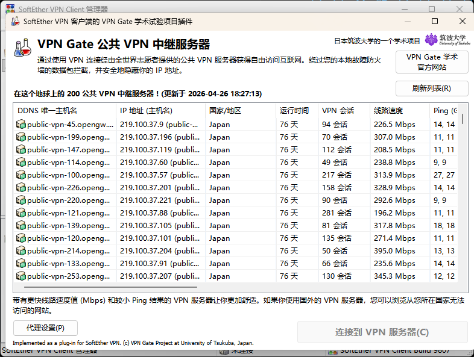
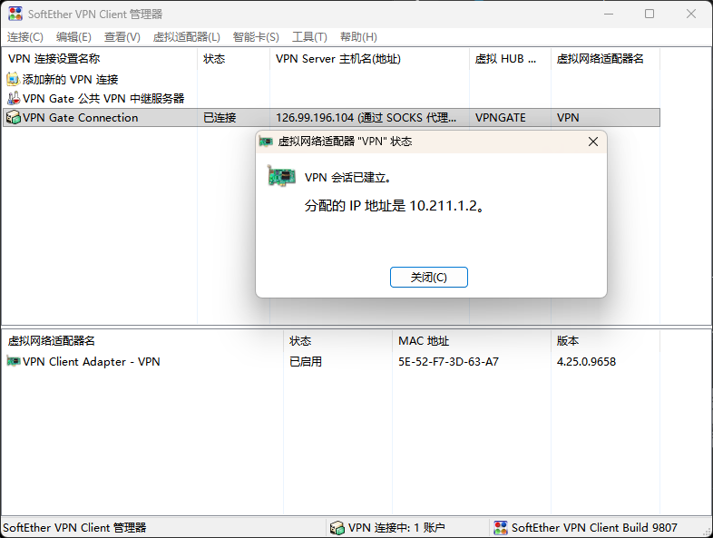
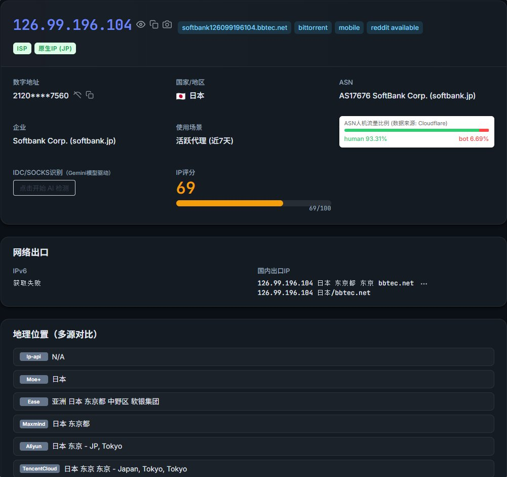

最近我的日本家宽供应商跑路了，导致我上不去DMM，于是我透过朋友介绍，用了VPN Gate的服务器。其中我看到主机名写着softbank字样，连上后它分配了一个内网IP给我，不过当我访问IPLark查询时，提示我现在用的是日本原生IP
哇更啊，这比我找IDC买的家宽VPS还他妈纯，关键是还免费不收取任何一份钱，谁懂
不过手机上并没有SoftEther客户端，因此我只能通过L2TP或OpenVPN的形式连接。如果未来VPNGate支持WireGuard协议就好了，这样体验就更哇塞了，总感觉这阵子是不是连的人少了，变成专属节点了😍
哇更啊，这比我找IDC买的家宽VPS还他妈纯，关键是还免费不收取任何一份钱，谁懂
不过手机上并没有SoftEther客户端，因此我只能通过L2TP或OpenVPN的形式连接。如果未来VPNGate支持WireGuard协议就好了，这样体验就更哇塞了，总感觉这阵子是不是连的人少了，变成专属节点了😍


